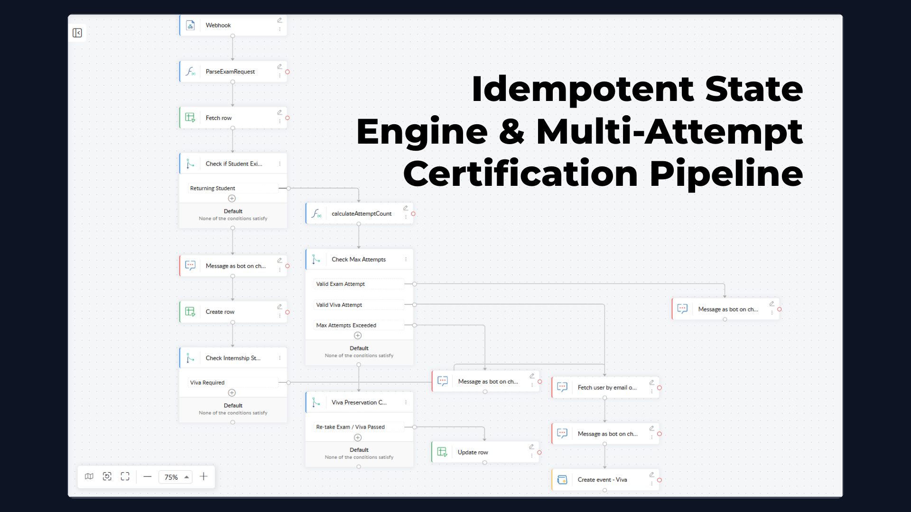
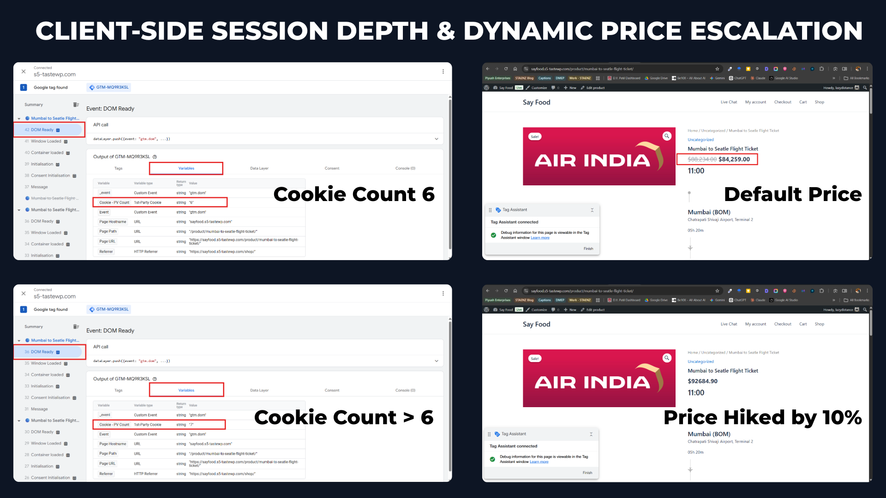
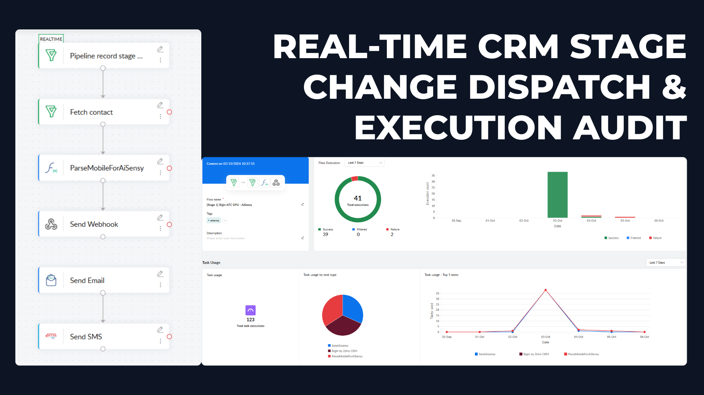
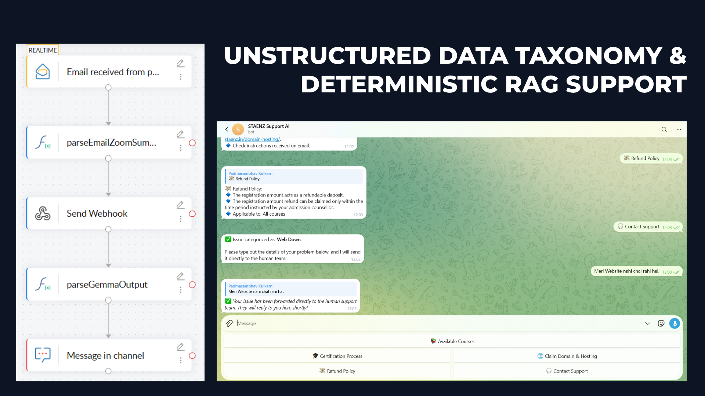

Bridging High-Growth Marketing Strategy & Resilient Technical Infrastructure
From Fragile Manual Operations to Self-Healing Automation
Zero data drop • Real-time deduplication • Error-trapped payload execution
STAENZ Academy Final Certification Pipeline
Students are strictly permitted up to three attempts to pass their certification exam. Under default form configurations, every single submission generated an isolated ticket and database entry. This inundated the administrative database with duplicate rows, fragmented exam histories, and forced evaluators to manually cross-reference timestamps and calculate attempt counts before issuing certificates.

GTM Container: GTM-MQ9R3KSL (Version 6 Production)
Engineered client-side session-depth tracking using a first-party cookie variable (staenz_pv_count). Rather than burdening backend server resources with session lookups, Google Tag Manager evaluates browser interaction depth at DOM Ready and executes tailored conversion optimization actions in real time.
Tawk_API.maximize() to proactively surface live support assistance..summary .price), strips non-numeric currency artifacts, calculates a +10% price escalation, and repopulates the DOM while preserving the currency symbol wrapper.// 1. Isolate and hide original strikethrough price element
var regularPrice = document.querySelector('.summary .price del');
if (regularPrice) { regularPrice.style.display = 'none'; }
// 2. Parse WooCommerce price element and isolate currency symbol
var priceElements = document.querySelectorAll('.summary .price .woocommerce-Price-amount bdi');
if (priceElements.length > 0) {
var activePrice = priceElements[priceElements.length - 1];
var symbolSpan = activePrice.querySelector('.woocommerce-Price-currencySymbol');
var symbol = symbolSpan ? symbolSpan.innerText : '';
// 3. Calculate dynamic +10% price escalation
var numericPrice = parseFloat(activePrice.innerText.replace(/[^0-9.]/g, ''));
if (!isNaN(numericPrice)) {
var newPrice = (numericPrice * 1.10).toFixed(2);
activePrice.innerHTML = '<span class="woocommerce-Price-currencySymbol">' + symbol + '</span>' + newPrice;
}
}
Zoho Bigin ATC Stage $\rightarrow$ Zoho Flow $\rightarrow$ AiSensy WhatsApp API
When sales and enrollment reps transition prospect stages to "Attempted to Contact" (ATC) after an unanswered call, manual outreach delays stretch to hours. Standard email notifications suffer from abysmal open rates (<20%), causing high lead decay and wasted acquisition spend.
Engineered an event-driven automation in Zoho Flow monitoring real-time stage updates. Upon transition to ATC, a custom Deluge script normalizes contact numbers to international E.164 format and pushes an authenticated JSON payload to AiSensy's WhatsApp Cloud API within seconds, prompting prospects to reschedule immediately.
// Strip all non-numeric characters from incoming user payloads
clean_digits = raw_phone.replaceAll("[^0-9]", "");
// Normalize 10-digit Indian numbers to E.164 format
if (clean_digits.length() == 10) {
return "91" + clean_digits;
}
// Strip leading zero from 11-digit entries
else if (clean_digits.length() == 11 && clean_digits.startsWith("0")) {
return "91" + clean_digits.subString(1, 11);
}
return clean_digits;
Zoom Cloud $\rightarrow$ Webhook $\rightarrow$ LLM Inference $\rightarrow$ LMS API
Dozens of hours of daily training and cohort recordings generated large volumes of unorganized, generic recording files (e.g., Recording_09_10.mp4). Finding specific curriculum topics, technical modules, and doubt resolutions in the LMS was nearly impossible without hours of manual review and tagging.
Knowledge_Base.json) on PythonAnywhere to deflect 80%+ of student administrative inquiries around course links and exams.
Technical Troubleshooting Labs & Standard Operating Procedure (SOP) Design
"I appreciate his ability to break down highly complex technical issues into simple, step-by-step solutions during troubleshooting. His immense patience ensures that no student feels left behind during doubt sessions."
— Jaswandi | PGDDM Cohort
"Clear and patient guidance. Explains concepts in a simple, practical way and is always willing to help until everyone understands. During doubt sessions and troubleshooting, he was always approachable."
— Jyoti Chaudhari | Digital Business Cohort
"Prompt response with solutions. If he can't provide the solution immediately, he makes sure he investigates and resolves the technical problem completely. Very calm and composed style."
— Sahil Barmate | Performance Marketing Cohort
The measurable difference between brittle manual administration and self-healing infrastructure.
| Operational Stage | The Fragile Status Quo (Manual Drag) | The Engineered System (Automated Leverage) |
|---|---|---|
| 01. Ingestion | Form submissions and customer checkouts scattered across unlinked Google Sheets, landing page tables, and raw CSV dumps. | Sub-second capture via asynchronous FunnelKit webhooks, Razorpay transaction hooks, and cloud dataLayer listeners. |
| 02. Processing | Operations staff manually copy-pasting customer records, correcting syntax errors, and tagging contact entries one-by-one. | Automated string normalization via Deluge and Python; strips anomalies, validates E.164 country codes, and error-traps payloads. |
| 03. Dispatch | Multi-hour response lag; transactional tickets land in email spam folders; hot prospects and abandoned checkouts decay. | Sub-2-second automated dispatch via AiSensy WhatsApp Cloud API with automatic transactional SMS fallback. |
| 04. Audit & Data | Attribution degrades from ad-blockers; financial ledger audits waste 2-3 days per month cross-referencing CSVs with spreadsheet formulas. | 1-click Power Query ETL reconciles orders with bank settlement UTRs; 100% deduplicated server-side ad signals via sGTM & CAPI. |
| Net Outcome | 20–30% Lead Decay • Administrative Burnout • Leaky Revenue | < 2s Latency • 100% Data Integrity • Zero Manual Drag |
Ready to deploy zero-friction marketing operations, leak-proof tracking, and team enablement? Book a diagnostic roadmap session to isolate operational drag and revenue leaks.
Inspect client vs. server event match quality (EMQ), identifying conversion signal loss, cookie degradation, and ad-blocker leakage.
Map lead-to-close workflows across landing pages, CRMs, and messaging apps to pinpoint manual copy-pasting and broken webhook payloads.
Deliver a zero-recurring-cost blueprint demonstrating how to automate routine tasks, reconcile ledgers, and free internal staff.